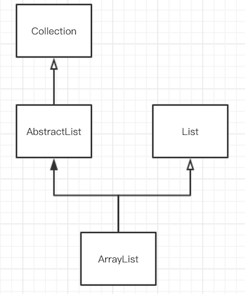

源码阅读之ArrayList实现细节
0x00 描述
ArrayList 可以说是 Java 程序猿最为常用的一种数据结构了。ArrayList 是通过数组实现的，容量可以自增的线性表。而数组的优点是计算机可以通过下标计算访问地址，所以访问元素的速度是很快的，时间复杂度为O(1)；但数组并不擅长插入和删除操作，这些操作的时间复杂度是O(n)。因此 ArrayList 继承了数组这些特点。
继承关系
ArrayList 继承于 AbstractList 并实现了 List 、RandomAccess、Cloneable 和 Serializable 接口。
而 AbstractList 是继承于 Collection 接口。因此简单的关系图可以表达为

重要属性
elementData这个是存放数据的Object数组size记录当前数组元素的个数modCount用于记录修改次数，例如增加、删除等操作时此变量会自增。当这个变量异常变化时，会抛出ConcurrentModificationException
构造方法
public ArrayList() {
this.elementData = DEFAULTCAPACITY_EMPTY_ELEMENTDATA;
}
默认构造函数初始化 elementData 大小为10 空数组。
public ArrayList(int initialCapacity) {
if (initialCapacity > 0) {
this.elementData = new Object[initialCapacity];
} else if (initialCapacity == 0) {
this.elementData = EMPTY_ELEMENTDATA;
} else {
throw new IllegalArgumentException("Illegal Capacity: "+ initialCapacity);
}
}
此方法通过一个 initialCapacity 变量对数组进行初始化。当传入的 initialCapacity 大于0时，elementData就是初始化为大小为 initialCapacity 的空数组；否则就是初始化为大小为0的空数组。
public ArrayList(Collection<? extends E> c) {
elementData = c.toArray();
if ((size = elementData.length) != 0) {
// c.toArray might (incorrectly) not return Object[] (see 6260652)
if (elementData.getClass() != Object[].class)
elementData = Arrays.copyOf(elementData, size, Object[].class);
} else {
// replace with empty array.
this.elementData = EMPTY_ELEMENTDATA;
}
}
这个方法是通过一个 Collection 对象进行初始化的。这里调用了 Arrays.copyOf 方法将数组元素进行拷贝，并返回一个新的数组。后文会详细解析这个方法。
0x01 常用方法
add(E e)
给 ArrayList 添加一个元素
public boolean add(E e) {
ensureCapacityInternal(size + 1); // Increments modCount!!
elementData[size++] = e;
return true;
}
添加元素之前，调用了 ensureCapacityInternal 方法，确保 elementData 数组有足够的空间。然后数组后面添加一个元素，并把元素个数 size 的值加1。
private void ensureCapacityInternal(int minCapacity) {
if (elementData == DEFAULTCAPACITY_EMPTY_ELEMENTDATA) {
minCapacity = Math.max(DEFAULT_CAPACITY, minCapacity);
}
ensureExplicitCapacity(minCapacity);
}
在 ensureCapacityInternal 中先判断 elementData 是否为空数组，如果是，则取 DEFAULT_CAPACITY 与 minCapacity 的最大值作为数组的最小容量。
然后再执行 ensureExplicitCapacity 方法。
private void ensureExplicitCapacity(int minCapacity) {
modCount++;
// overflow-conscious code
if (minCapacity - elementData.length > 0)
grow(minCapacity);
}
先把 modCount 加1，表示对该列表进行了一次操作。
minCapacity 表示目前需要的容量大小。如果它大于目前 elementData 的容量大小，那么就会执行 grow 方法增加数组容量。
private void grow(int minCapacity) {
// overflow-conscious code
int oldCapacity = elementData.length;
int newCapacity = oldCapacity + (oldCapacity >> 1);//右移1位操作相当于除2
if (newCapacity - minCapacity < 0)
newCapacity = minCapacity;
if (newCapacity - MAX_ARRAY_SIZE > 0)
newCapacity = hugeCapacity(minCapacity);
// minCapacity is usually close to size, so this is a win:
elementData = Arrays.copyOf(elementData, newCapacity);
}
该方法的逻辑是
- 先获取到
newCapacity，它是原来容量大小的1.5倍 - 如果需要的容量大小
minCapacity大于原来容量的1.5，那么newCapacity就取minCapacity - 如果
newCapacity还大于最大的容量，那么就执行hugeCapacity来计算得到容量大小 - 最后调用
Arrays.copyOf方法把elementData拷贝到一个新的数组中，这个新数组大小为newCapacity
private static int hugeCapacity(int minCapacity) {
if (minCapacity < 0) // overflow
throw new OutOfMemoryError();
return (minCapacity > MAX_ARRAY_SIZE) ? Integer.MAX_VALUE : MAX_ARRAY_SIZE;
}
因此在调用 add 方法时，如果当前数组 elementData 的容量不够时，就会调用扩容的 grow 方法，把数组扩大为原来的1.5倍的大小。
add(int index, E element)
在指定的 index 位置上添加一个元素
public void add(int index, E element) {
if (index > size || index < 0)
throw new IndexOutOfBoundsException(outOfBoundsMsg(index));
ensureCapacityInternal(size + 1); // Increments modCount!!
System.arraycopy(elementData, index, elementData, index + 1, size - index);
elementData[index] = element;
size++;
}
通过上面的 add 方法的走读，这个方法就很好理解了。
先对 index 参数的有效性进行判断；
然后执行 ensureCapacityInternal 确保数组的容量大小是足够的，此时 modCount 也会自增；
再执行 System.arraycopy 方法把数组元素从 index 的位置后移1位；（System.arraycopy 函数后文还会讲到）
最后在 index 位置上赋值，并把 size 加 1。
addAll(Collection<? extends E> c)
public boolean addAll(Collection<? extends E> c) {
Object[] a = c.toArray();
int numNew = a.length;
ensureCapacityInternal(size + numNew); // Increments modCount
System.arraycopy(a, 0, elementData, size, numNew);
size += numNew;
return numNew != 0;
}
addAll 方法把一个 Collection 对象添加到列表中来。
它会先把 Collection 对象通过 toArray 方法转化为数组，然后再调用 System.arraycopy 进行数据的移动。
addAll(int index, Collection<? extends E> c)
public boolean addAll(int index, Collection<? extends E> c) {
if (index > size || index < 0)
throw new IndexOutOfBoundsException(outOfBoundsMsg(index));
Object[] a = c.toArray();
int numNew = a.length;
ensureCapacityInternal(size + numNew); // Increments modCount
int numMoved = size - index;
if (numMoved > 0)
System.arraycopy(elementData, index, elementData, index + numNew, numMoved);
System.arraycopy(a, 0, elementData, index, numNew);
size += numNew;
return numNew != 0;
}
在 index 位置上添加一个列表
它与上面 addAll 方法的区别就是先从 index 开始移动 numNew 个位置，即空出 numNew 个位置。
然后再空出的 numNew 位置上添加元素。
remove(int index)
删除指定 index 位置上的元素
public E remove(int index) {
if (index >= size)
throw new IndexOutOfBoundsException(outOfBoundsMsg(index));
modCount++;
E oldValue = (E) elementData[index];
int numMoved = size - index - 1;
if (numMoved > 0)
System.arraycopy(elementData, index+1, elementData, index,
numMoved);
elementData[--size] = null; // clear to let GC do its work
return oldValue;
}
执行流程为
- 检查
index有效性，无效则抛出IndexOutOfBoundsException异常 modCount自增- 通过
index下标取出元素 - 计算
index后面需要移动的元素个数 - 通过
System.arraycopy将index后面的元素都往前移动1位 - 最后把末尾元素置位
null，并把size的值减 1。
remove(Object o)
通过一个元素对象进行删除
public boolean remove(Object o) {
if (o == null) {
for (int index = 0; index < size; index++)
if (elementData[index] == null) {
fastRemove(index);
return true;
}
} else {
for (int index = 0; index < size; index++)
if (o.equals(elementData[index])) {
fastRemove(index);
return true;
}
}
return false;
}
当传一个元素对象进行删除操作时，需要遍历数组，找到该元素在列表中的位置 index；
然后通过 fastRemove 方法进行删除。
private void fastRemove(int index) {
modCount++;
int numMoved = size - index - 1;
if (numMoved > 0)
System.arraycopy(elementData, index+1, elementData, index, numMoved);
elementData[--size] = null; // clear to let GC do its work
}
clear()
清空列表
public void clear() {
modCount++;
// clear to let GC do its work
for (int i = 0; i < size; i++)
elementData[i] = null;
size = 0;
}
subList(int fromIndex, int toIndex)
获取子列表
public List<E> subList(int fromIndex, int toIndex) {
subListRangeCheck(fromIndex, toIndex, size);
return new SubList(this, 0, fromIndex, toIndex);
}
static void subListRangeCheck(int fromIndex, int toIndex, int size) {
if (fromIndex < 0)
throw new IndexOutOfBoundsException("fromIndex = " + fromIndex);
if (toIndex > size)
throw new IndexOutOfBoundsException("toIndex = " + toIndex);
if (fromIndex > toIndex)
throw new IllegalArgumentException("fromIndex(" + fromIndex +") > toIndex(" + toIndex + ")");
}
首先检查下标是否正确，然后构造一个 SubList 对象，这是一个内部类。
SubList 也是继承于 AbstractList。
private class SubList extends AbstractList<E> implements RandomAccess {
private final AbstractList<E> parent;
private final int parentOffset;
private final int offset;
int size;
SubList(AbstractList<E> parent,
int offset, int fromIndex, int toIndex) {
this.parent = parent;
this.parentOffset = fromIndex;
this.offset = offset + fromIndex;
this.size = toIndex - fromIndex;
this.modCount = ArrayList.this.modCount;
}
public E set(int index, E e) {
if (index < 0 || index >= this.size)
throw new IndexOutOfBoundsException(outOfBoundsMsg(index));
if (ArrayList.this.modCount != this.modCount)
throw new ConcurrentModificationException();
E oldValue = (E) ArrayList.this.elementData[offset + index];
ArrayList.this.elementData[offset + index] = e;
return oldValue;
}
public E get(int index) {
if (index < 0 || index >= this.size)
throw new IndexOutOfBoundsException(outOfBoundsMsg(index));
if (ArrayList.this.modCount != this.modCount)
throw new ConcurrentModificationException();
return (E) ArrayList.this.elementData[offset + index];
}
...
public void add(int index, E e) {
if (index < 0 || index > this.size)
throw new IndexOutOfBoundsException(outOfBoundsMsg(index));
if (ArrayList.this.modCount != this.modCount)
throw new ConcurrentModificationException();
parent.add(parentOffset + index, e);
this.modCount = parent.modCount;
this.size++;
}
public E remove(int index) {
if (index < 0 || index >= this.size)
throw new IndexOutOfBoundsException(outOfBoundsMsg(index));
if (ArrayList.this.modCount != this.modCount)
throw new ConcurrentModificationException();
E result = parent.remove(parentOffset + index);
this.modCount = parent.modCount;
this.size--;
return result;
}
...
public boolean addAll(Collection<? extends E> c) {
return addAll(this.size, c);
}
public boolean addAll(int index, Collection<? extends E> c) {
if (index < 0 || index > this.size)
throw new IndexOutOfBoundsException(outOfBoundsMsg(index));
int cSize = c.size();
if (cSize==0)
return false;
if (ArrayList.this.modCount != this.modCount)
throw new ConcurrentModificationException();
parent.addAll(parentOffset + index, c);
this.modCount = parent.modCount;
this.size += cSize;
return true;
}
...
}
SubList 构造方法需要一个父列表。在获取、添加、删除元素的方法中实际上都是调用父列表中的方法。
不过这些操作的方法中会判断 modCount 的值是否已经变化，如果异常改变了，那么就会抛出 ConcurrentModificationException 异常。
forEach(Consumer<? super E> action)
遍历列表元素
public void forEach(Consumer<? super E> action) {
Objects.requireNonNull(action);
final int expectedModCount = modCount;
@SuppressWarnings("unchecked")
final E[] elementData = (E[]) this.elementData;
final int size = this.size;
for (int i=0; modCount == expectedModCount && i < size; i++) {
action.accept(elementData[i]);
}
// Android-note:
// Iterator will not throw a CME if we add something while iterating over the *last* element
// forEach will throw a CME in this case.
if (modCount != expectedModCount) {
throw new ConcurrentModificationException();
}
}
同样地，此方法中如果 modCount 被异常修改了（例如在其他线程中执行了 add 方法）那么就会抛出 ConcurrentModificationException 异常。
iterator()
获取遍历器
public Iterator<E> iterator() {
return new Itr();
}
Itr 是一个内部类，实现了 Iterator 接口。
private class Itr implements Iterator<E> {
// Android-changed: Add "limit" field to detect end of iteration.
// The "limit" of this iterator. This is the size of the list at the time the
// iterator was created. Adding & removing elements will invalidate the iteration
// anyway (and cause next() to throw) so saving this value will guarantee that the
// value of hasNext() remains stable and won't flap between true and false when elements
// are added and removed from the list.
protected int limit = ArrayList.this.size;
int cursor; // index of next element to return
int lastRet = -1; // index of last element returned; -1 if no such
int expectedModCount = modCount;
public boolean hasNext() {
return cursor < limit;
}
@SuppressWarnings("unchecked")
public E next() {
if (modCount != expectedModCount)
throw new ConcurrentModificationException();
int i = cursor;
if (i >= limit)
throw new NoSuchElementException();
Object[] elementData = ArrayList.this.elementData;
if (i >= elementData.length)
throw new ConcurrentModificationException();
cursor = i + 1;
return (E) elementData[lastRet = i];
}
public void remove() {
if (lastRet < 0)
throw new IllegalStateException();
if (modCount != expectedModCount)
throw new ConcurrentModificationException();
try {
ArrayList.this.remove(lastRet);
cursor = lastRet;
lastRet = -1;
expectedModCount = modCount;
limit--;
} catch (IndexOutOfBoundsException ex) {
throw new ConcurrentModificationException();
}
}
...
}
该类中 cursor 属性记录了当前迭代的位置，每调用一次 next 方法都会加 1，lastRet 则记录了上一次的元素位置。
remove 方法则是通过调用外部类的 remove 方法来实现的。
以上两个方法中也需要注意 ConcurrentModificationException 异常的发生。
contains(Object o)
检测是否包含元素
public boolean contains(Object o) {
return indexOf(o) >= 0;
}
public int indexOf(Object o) {
if (o == null) {
for (int i = 0; i < size; i++)
if (elementData[i]==null)
return i;
} else {
for (int i = 0; i < size; i++)
if (o.equals(elementData[i]))
return i;
}
return -1;
}
可以看出要检测一个元素是否在列表中，是通过遍历来实现的。
System.arraycopy
public static native void arraycopy(Object src, int srcPos, Object dest, int destPos,int length);
这是数组拷贝函数，是 native 函数，它经过虚拟机优化的，效率比较高。在 ArrayList 中移动元素就是通过这个方法。
Arrays.copyOf
public static <T> T[] copyOf(T[] original, int newLength) {
return (T[]) copyOf(original, newLength, original.getClass());
}
public static <T,U> T[] copyOf(U[] original, int newLength, Class<? extends T[]> newType) {
@SuppressWarnings("unchecked")
T[] copy = ((Object)newType == (Object)Object[].class) ? (T[]) new Object[newLength] : (T[]) Array.newInstance(newType.getComponentType(), newLength);
System.arraycopy(original, 0, copy, 0, Math.min(original.length, newLength));
return copy;
}
可以看出 copyOf 函数最终调用的是 System.arraycopy 方法。本文中 grow 方法就是调用 copyOf 来实现扩容的。
0x02 总结
ArrayList是基于数组实现的线性表，它支持自动扩容，每次增加原来容量的1.5倍。- 通过下标获取元素操作效率高，而删除和插入操作则需要移动元素，效率不高。
remove函数通过对象删除元素时需要遍历列表，而通过下标index删除元素比通过对象删除元素的效率要高。containts与clear方法需要遍历。subList获取到子列表，对子列表的修改同样也会修改父列表。ArrayList没有同步锁，在多线程操作时需要注意ConcurrentModificationException异常。- 如果在同一线程中对
ArrayList操作时引起modCount异常改变时，也要注意ConcurrentModificationException，这时候要检查代码逻辑问题。